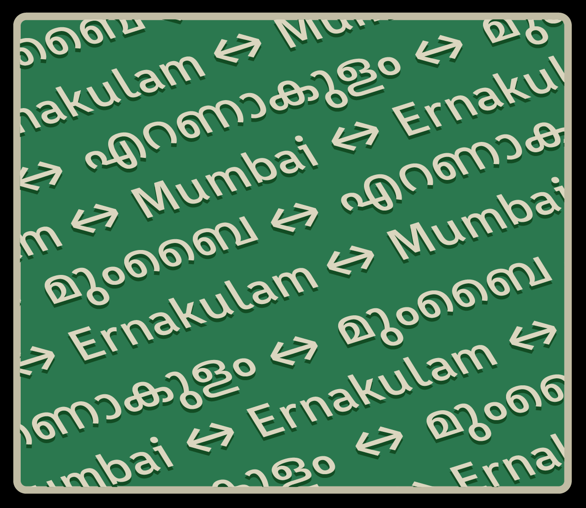
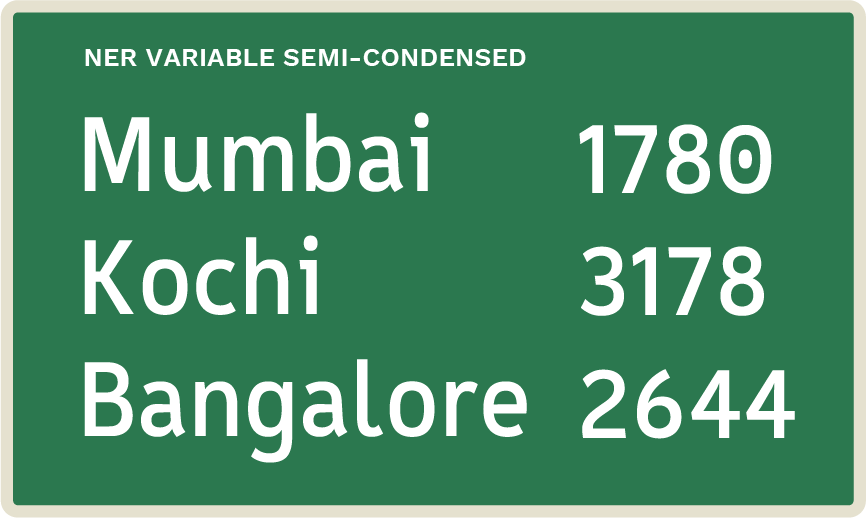

Graduation Project at IDC School of Design, IIT Bombay. I have always been more interested in the functional aspects of a typeface and I found signages to be an interesting topic to work on. Especially the challenges when displaying multiple scripts on a single signage board as that is a common scenario everywhere in India.
The typeface is variable in the width axis which allows them to be used without squishing the font when the space is limited. The supported scripts are Latin and Malayalam along with some arrow symbols and a few contexual and stylistic alternates.
Ner Variable
നേർ വേരിയബിൾ
Please Note:– There are some things that I would've done differently now, and things that I failed to take into consideration while doing this project, like the legibility of the condensed versions, inclusion of old orthography, additional script support, more refinement in spacing etc.